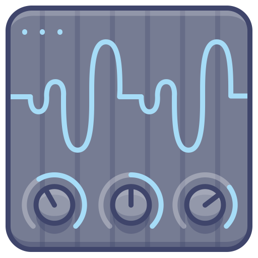

Rapidly Prototyping
MIDI Controllers
with Web MIDI

Max Vogler, Web Audio Conference 2021
github.com/max-vogler/midi
MIDI
MIDI
MIDI
MIDI
Web MIDI
https://dj.beatport.com/
https://midi.maxvogler.de/
https://midi.maxvogler.de/
https://midi.maxvogler.de/
Accessing Web MIDI ports
<!doctype html><script type="module">
const midi = await navigator.requestMIDIAccess();
const getMIDIOutputs = () => [...midi.outputs.values()];
await Promise.all(getMIDIOutputs().map(o => o.open()));
const sendMIDIMessage = (message) =>
getMIDIOutputs().forEach((output) =>
output.send(message));
Sending MIDI messages
// MIDI message format: [command, pitch, velocity]
const noteOn = (pitch, velocity) => sendMIDIMessage(
[0x90, pitch, Math.round(velocity * 127)]);
// In MIDI standard, messages describe notes on a piano:
noteOn(0, 1) // Hit lowest C note with full velocity.
noteOn(1, 0.1) // Hit lowest C# note lightly.
// DJ software can map the same messages differently:
noteOn(0, 1) // Move crossfader to the right.
noteOn(1, 0.1) // Set effect dry/wet to 10%.
noteOn(2, 1) // Press button, spin jog wheel, …
Prototype: 3D Touch Controller
document.addEventListener("pointermove", (event) => {});
{ // PointerEvent
button: -1,
buttons: 1,
height: 1,
movementX: -3,
movementY: 2,
pointerId: 1,
pointerType: "mouse",
pressure: 0.5,
tangentialPressure: 0,
tiltX: 0,
tiltY: 0,
timeStamp: 28038.30000001192,
twist: 0,
type: "pointermove",
width: 1,
x: 217.86328125,
y: 719.2265625,
// …
Translating touch events to MIDI
document.addEventListener("pointermove",
({x, y, pressure, buttons}) => {
const sendOnOrOff = buttons ? noteOn : noteOff;
sendOnOrOff(0, x / window.innerWidth);
sendOnOrOff(1, y / window.innerHeight);
sendOnOrOff(2, pressure);
});
https://midi.maxvogler.de/touch/
That is how you prototype a
3D Touch MIDI controller
in 15 lines of code.

Prototype: Gamepad Controller
navigator.getGamepads() # => Gamepad[]
[{
axes: [
0.041061997413635,
-0.175371944904327,
-0.701930284500122,
-0.928191065788269,
],
buttons: [
{pressed: false, touched: false, value: 0},
{pressed: true, touched: true, value: 1},
{pressed: true, touched: true, value: 0.52156869},
// …
],
connected: true,
id: "Xbox One Wired Controller (STANDARD GAMEPAD Vendor: 045e Product: 02ea)",
index: 0,
mapping: "standard",
timestamp: 227490.80000001192,
vibrationActuator: null,
}]
window.addEventListener("gamepadconnected", () => {
requestAnimationFrame(gamePadProcessLoop);
});
function gamePadProcessLoop() {
requestAnimationFrame(gamePadProcessLoop);
const gamepad = navigator.getGamepads()[0];
gamepad.buttons.forEach((button, i) => {
const send = button.value ? noteOn : noteOff;
send(i, button.value);
});
gamepad.axes.forEach((axis, i) => {
const send = Math.abs(axis) < 0.1 ? noteOn : noteOff;
send(gamepad.buttons.length + i, axis / 2 + 0.5);
});
}
https://midi.maxvogler.de/controller/
Prototype: WebRTC P2P Controller
Receive MIDI messages through WebRTC
const peer = new Peer()
.on("open", onPeerOpen)
.on("connection", initConnection);
function onPeerOpen(id) {
const canvas = document.querySelector("canvas");
const url = `https://midi.maxvogler.de/touch/#${id}`;
QRCode.toCanvas(canvas, url);
}
function initConnection(connection) {
connection.on("data", (message) => {
messages.forEach(msg => sendMIDIMessage(msg));
});
}
Send MIDI messages through WebRTC
let connection;
const peer = new Peer().on("open", () => {
const receiverId = window.location.hash.substr(1);
connection = peer.connect(receiverId);
});
document.addEventListener("pointermove",
({pressure}) => {
connection.send([
…
[0x90, 0, pressure],
]);
});
https://midi.maxvogler.de/gateway/
Prototype: TFJS Handpose Controller
await model.estimateHands(video) // => Prediction[]
[{
"handInViewConfidence": 0.9999556541442871,
"boundingBox": {
"topLeft": [ 28.1298146, 19.8936638],
"bottomRight": [247.2517192, 239.0155685],
},
"annotations": {
"thumb": [ … ],
"indexFinger": [
[151.02550626, 206.21306088, 13.06605720],
[174.06625332, 193.85526167, 22.90657806],
[188.86545223, 185.76264153, 30.54719924],
[196.11875342, 180.25369840, 39.67101287],
],
"middleFinger": [ … ],
"ringFinger": [ … ],
"pinky": [ … ],
"palmBase": [
[115.1016626, 209.1353088, 0.0000614],
]
}}]
const video = document.querySelector("video");
video.srcObject = await navigator.mediaDevices.getUserMedia(
{audio: false, video: {facingMode: "user"}});
video.play();
const model = await handpose.load();
processVideoLoop();
async function processVideoLoop() {
const predictions = await model.estimateHands(video);
if (predictions.length > 0) {
noteOn(0, calculateHandOpenness(
predictions[0].annotations));
} else {
noteOff(0, 0);
}
requestAnimationFrame(processVideoLoop);
}
function calculateHandOpenness(handPoints) {
const { palmBase, thumb, ...fingers } = handPoints;
const openness = Object.values(fingers).map((points) =>
calculateFingerOpenness(palmBase[0], points)
);
return Math.min(1, Math.max(0, median(openness)));
}
function calculateFingerOpenness(palm, fingerPoints) {
const distToBase = distance(palm, fingerPoints[0]);
const distToTip = distance(palm, fingerPoints[4]);
return 0.3 + 0.8 *
((distToTip - distToBase) / distToBase);
}
function distance([ax, ay], [bx, by]) {
return Math.sqrt((bx - ax) ** 2 + (by - ay) ** 2);
}
https://midi.maxvogler.de/handpose/
tl;dr:
- Web platform provides access to input devices, sensor data, data streams.
- Web MIDI trivially integrates with audio applications.
- Combine both to prototype new MIDI controllers in minutes.
- Have fun, but watch out for stability and latency.
Future
- Generate MIDI inputs with AI
- Integrate with HID devices
- dance pads, workout machines
- Interact with livestream viewers
- Twitch messages
- Interact with in-person viewers
- handpose detection, link phones
- Connect remote artists to play together
- Interact with live data streams
Credits
- Prototypes (MIT): github.com/max-vogler/midi
- QRCode, PeerJS, reveal.js (MIT)
- tfjs, handpose model (Apache-2.0)
- Gamepad viz from gamepadviewer.com
- Flat Icons from www.flaticon.com
https://midi.maxvogler.de/latency/